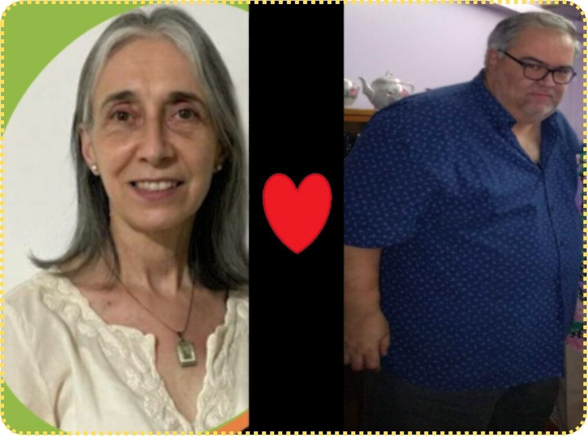

Mi Perspectiva
La tecnología redefine lo humano. Amplifica nuestras capacidades, pero también tensiona nuestra identidad, nuestra ética y nuestra relación con la naturaleza.
La integración entre biología y tecnología —implantes, IA, biotecnología— ya no es ficción. La cuestión no es si avanzará, sino bajo qué principios.
Surgen preguntas inevitables: ¿quién tendrá acceso? ¿qué límites deben existir? ¿cómo protegemos la autonomía, la privacidad y la equidad?
El progreso sin ética es riesgo. El progreso con conciencia es evolución.
El transhumanismo propone superar límites biológicos mediante ciencia y tecnología. Puede significar salud, longevidad y mejora cognitiva; pero también desigualdad y pérdida de identidad si no se regula con responsabilidad.
El desafío es claro: innovar sin perder humanidad.
En memoria de mis profesores de secundaria 🕊 Alejandro Javier Igartúa y Nilda Irene Caamaño ✝️
